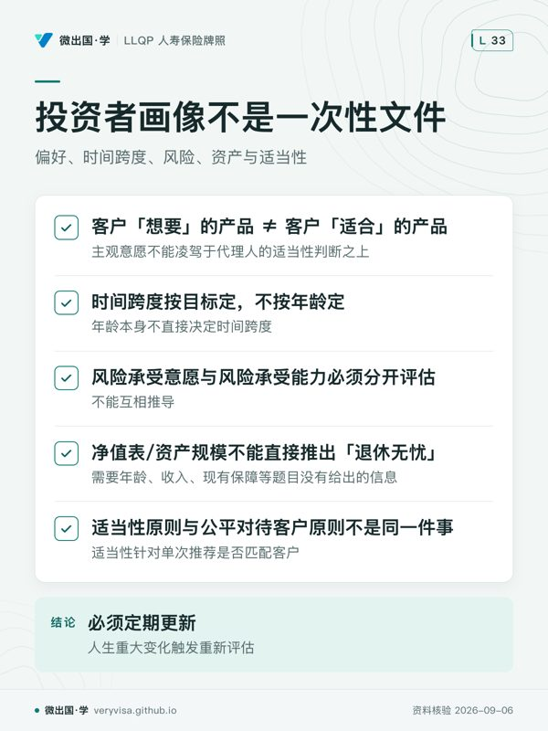

🃏 Flashcards · 3 闪卡 · 3 张 🖼 Slides · 2 幻灯 · 2 页 ✍️ Questions · 7 刷题 · 7 道
分离基金与年金 Segregated Funds & Annuities P1 必拿分 P1 Must score
ZH EN ZH + EN
先看这一章怎么考 First, how this chapter is tested
意愿与能力冲突题：题干给出一位主观上渴望高收益或自称不怕亏损、但客观财务状况脆弱（如唯一收入来源、短期内有刚性支出或仅靠政府养老金生活）的客户，测试考生能否识别风险承受意愿（risk tolerance）与风险承受能力（risk capacity）的独立性，并以较低者作为推荐的硬约束上限。 Willingness versus capacity conflict questions: Scenarios present a client who subjectively desires high returns or claims to tolerate steep losses, but has a fragile objective financial position (such as being the sole household earner, facing nondiscretionary short-term expenses, or relying solely on government pensions), testing whether candidates can recognize the independence of risk tolerance and risk capacity and apply the lower of the two as the binding upper constraint for recommendations. 时间跨度与多目标拆解题：用客户的实际年龄（如二十多岁的年轻客户或接近七十岁的退休客户）作为干扰项，结合短期用款目标（如三年内使用）或长期跨代目标（如二十年后的孙辈教育），测试时间跨度（time horizon）必须按资金的具体目标而非客户年龄来判定，且同一客户的不同资金目标须分别建立画像。 Time horizon and multi-goal separation questions: Scenarios use the client's chronological age (such as a client in their twenties or a retiree near age seventy) as a distractor, combined with short-term expenditure goals (such as funds needed within three years) or long-term intergenerational goals (such as grandchildren's education in twenty years), testing whether candidates determine the time horizon based on the specific goal of the funds rather than the client's age, and build separate investor profiles for different goals of the same client. 财务报表与负债性质判读题：给出客户的净资产表（net worth statement）、现金流量表（cash flow statement）及对账单细节，测试反向按揭（reverse mortgage）属于侵蚀遗产的负债而非资产、良性负债（good debt）仍须核实按期偿还能力、以及单月合理大额支出与持续性透支的区别。 Financial statements and debt classification questions: Scenarios provide details from a client's net worth statement, cash flow statement, and account statements, testing whether candidates identify that a reverse mortgage is an estate-eroding liability rather than an asset, that good debt still requires verifying ongoing repayment ability, and how to distinguish an explainable single-month large expenditure from ongoing structural deficit. 最常丢分的陷阱（看到题干信号就警觉） Traps that cost the most marks (watch for the signal in the stem)
顺从客户主观偏好 Deferring to client subjective preference 题干出现客户强烈要求购买高收益股票型基金、声称“能承受大跌”，但同时交代其应急资金不足、属于家庭唯一收入来源或仅靠养老金维持生活。 The question stem shows a client insisting on high-yield equity funds and claiming comfort with sharp market drops, while simultaneously revealing an inadequate emergency fund, sole breadwinner status, or reliance solely on pensions for living expenses. 以年龄代替时间跨度 Substituting age for time horizon 题干突出强调客户的年龄（如 28 岁或 68 岁），但紧接着说明该笔资金用于近期确定开支（如两年内办婚礼、三年后交学费）或远期传承目标（如 20 年后孙辈教育）。 The question stem emphasizes the client's chronological age (such as 28 or 68), but immediately clarifies that the funds are allocated for a fixed near-term expenditure (such as a wedding in two years or tuition in three years) or a distant legacy goal (such as grandchildren's education in twenty years). 持仓结构外推财务结论 Extrapolating financial conclusions from portfolio holdings 题干只给出一张净资产表或保守型持仓明细，未提供收入、支出、年龄或现有保障等完整信息，选项却出现“财务承受能力必定低下”或“无需保险保障”等绝对化结论。 The question stem provides only a net worth statement or conservative holding breakdown without complete information on income, expenses, age, or existing coverage, while options offer definitive conclusions like financial capacity is definitely low or life insurance is unnecessary. 本章考点页：导图、要点表、7 道带逐项解析的练习 →
考纲把"评估客户需求与处境"（assess the client's needs and situation）定为 c1，权重 35% ——分别高于"分析产品"（c2，30%）与"落实推荐"（c3，25%），但小于二者合计 55%，是全模块唯一一个超过三分之一分值的能力组件。这不是巧合：分离基金与年金合同一旦签下去，代理人真正要为之负责的不是"这个产品好不好"，而是"这个产品配不配得上眼前这个人"——配不配得上的判断依据，就是本章要建立的投资者画像（investor profile）。读完这一章，你要能做三件事：把 KYC（了解你的客户）拆成六个必须分别核实的要素，而不是笼统地"了解一下"；把风险承受意愿与风险承受能力这两个经常被混为一谈的概念完全独立地判断，不能用一个去推另一个；以及看懂适当性原则与公平对待客户原则分别管什么、谁是谁的下位概念。这三件事分别对应考场里最常见的三种陷阱题型，也是柜台工作里最容易把客户带偏方向的三个环节。
一、制度设计与底层逻辑：为什么"了解客户"是一项持续义务，不是开户手续 本节回答 This section answers 解释KYC六要素及风险意愿与能力冲突时以较低者为约束上限 Explain the six core KYC elements and applying the lower of risk tolerance or risk capacity as the binding constraint in conflicts 本章考题 1 Question 1
1. KYC 不是表格，是代理人对自己的免责证据
了解你的客户（Know Your Client, KYC）这件事在监管语言里从来不是"填一张表"，而是代理人证明自己"没有乱推荐"的持续性程序。它的法律后果落在两端：客户这一端，KYC 不到位而买错产品，损失可能追溯到代理人身上；代理人这一端，一份留痕完整的投资者画像与推荐理由信（reason-why letter，见第五章）是日后被投诉或被监管机构问询时重要证据之一，仍须与真实客户资料、沟通和交付记录一起判断。换句话说，KYC 表面上服务客户，制度设计上其实同时是代理人的责任边界——做得越彻底，代理人越安全；做得潦草，代理人和客户一起暴露在风险里。
KYC 具体要核实什么，考试口径把它拆成了远不止"风险等级"这一件事。综合 §4.1（财务状况）、§4.2（个人因素）、§4.3（投资者需求）与 §4.8（画像判定），可以收敛成六个必须分别核实、不能互相替代的要素：
⚠️
"风险承受意愿"与"风险承受能力"常被顺序写反
中文材料里常把 risk tolerance 译成"风险承受能力"、把 risk capacity 译成"风险承受意愿"，与考试口径原文的定义正好对调。本页统一用：risk tolerance＝承受意愿（主观心理），risk capacity＝承受能力（客观财务）。考场遇到英文原词不会有歧义，遇到中文译名时先回英文原词判断，不要死记中译名。
2. 谁与谁在博弈：客户的自我认知 vs 代理人的核实义务
这一章底层逻辑的核心冲突是：客户对自己风险承受意愿的自我评估系统性地不可靠。考试口径明确指出，投资者普遍高估自己的风险承受意愿，也常常"说一套做一套"——嘴上说"我能承受大跌"，市值真跌 20% 就要求代理人立刻转成保本产品。这不是客户在说谎，而是"愿赌服输"的自我评估天然带有事后偏差：市场平静时人人自信，波动来临时才知道自己的真实底线。
图：风险意愿与风险能力——一个看心理意愿，一个看客观财务承受能力
正因为如此，考试口径把责任明确压在代理人身上：代理人不能只听客户自称的风险等级，必须结合谈话内容、投资动机、恐惧点、期望值综合判断，而不是让客户自己填一个数字就采信。行业里另有一个不在本章考试口径原文出现、但业内广泛使用的第三个维度——风险感知（risk perception）：客户"自认为"处在什么风险水平，这个自我感知本身也可能与他的真实承受意愿、真实承受能力都不一致（例如把"高分红"误当成"低风险"）。三者一旦不一致，代理人的判断以承受能力（客观财务）为硬约束上限，承受意愿同样作为不能越过的约束，风险感知只作为面谈线索，不能单独作为推荐依据。
同一个投资者对不同的钱可以有不同的风险承受意愿——考试口径特别提醒这一点：一笔为退休存的钱和一笔为度假存的钱，同一个人对它们的心理承受度可以完全不同，画像是"按目标做"，不是"按人做"。
3. 法律后果：画像做错了，代理人赔的不是佣金
一旦投资者画像与实际推荐的产品出现明显错配——比如把一位风险承受能力低的客户配进高风险股票型分离基金——考试口径与行业规则给出的后果链条是：客户投诉 → 保司/MGA 合规部门介入调查推荐理由信是否充分 → 情节严重则进入省级保险监管机构（BC 为 Insurance Council of BC / BCFSA）的纪律处分程序，可能涉及罚款、暂牌或吊牌。这条链条能不能启动，第一手证据就是当初的投资者画像文件与推荐理由信有没有做全、做对——这正是为什么这一章占考纲 35%：它不是背景知识，是代理人的执业风险管理。
节末检索小测 · 先别往回翻，凭记忆作答 Quick recall check: answer from memory before scrolling back
An investor tells her insurance agent that she is comfortable with sharp market swings and views high-dividend equity funds as low-risk investments. However, her financial review shows minimal emergency savings and a rigid obligation to fund a major family expense in 3 years. How must the agent establish her investor profile?
一位投资者告诉她的保险代理人，她不介意剧烈的市场波动，并认为高分红股票型基金属于低风险投资。然而，财务审阅显示她的应急储蓄极少，且在 3 年后有一笔刚性的大额家庭开支。代理人应如何建立她的投资者画像？
a Rely on the client's stated comfort with volatility and recommend an equity fund that matches her risk perception. ✗ 错误。客户把高分红误当成低风险属于风险感知（risk perception）偏差，且客户常高估自己的风险承受意愿（risk tolerance）；代理人不能单凭客户自称的风险水平或风险感知作为推荐依据（顺从客户主观偏好陷阱）。 Incorrect. Mistaking high dividend payouts for low risk represents a distortion in risk perception, and clients frequently overestimate their own risk tolerance; an agent cannot base recommendations solely on a client's self-reported risk comfort or subjective perception (deferring to client subjective preference trap).
b Average her high psychological willingness to take risk with her limited financial resources to select a medium-risk product. ✗ 错误。风险承受意愿（risk tolerance）与风险承受能力（risk capacity）必须分别独立评估，且两者都是推荐的约束条件，不能将高意愿与低能力简单折中取平均。 Incorrect. Risk tolerance and risk capacity must be evaluated independently, and both serve as constraints on recommendations; an agent cannot simply compromise by averaging high willingness with low financial capacity.
c Treat her low objective financial ability to absorb losses as the binding upper limit, using her risk perception only as an interview clue. ✓ 正确。当风险承受意愿（risk tolerance）、风险承受能力（risk capacity）与风险感知（risk perception）不一致时，代理人的判断必须以客观财务上的风险承受能力为硬约束上限，风险感知只作为面谈沟通线索而不能单独作为推荐依据。 Correct. When risk tolerance, risk capacity, and risk perception conflict, the agent's recommendation must treat objective financial risk capacity as the binding upper limit, using risk perception merely as an interview clue rather than an independent basis for product advice.
d Assign a single aggressive profile to all of her accounts because her long-term retirement goal is still 13 years away. ✗ 错误。投资者画像（investor profile）是“按目标做”而不是“按人做”，3 年后确定要用的刚性开支与 13 年后的退休目标时间跨度（time horizon）截然不同，不能用同一个高风险等级覆盖全部资金。 Incorrect. Investor profiles are constructed per goal rather than per person; a fixed expenditure needed in 3 years has a completely different time horizon from a retirement goal 13 years away, so a single high-risk rating cannot be applied across all assets.
看答案与每个选项的解析 Show the answer and why each option is right or wrong 答案 Answer ：c
二、2026 现行政策与数字：考试口径没写到、或写死了的地方 本节回答 This section answers 对比CPP二层供款、FHSA额度及TCR保证费用单列披露规则 Compare two-tier CPP contributions, FHSA limits, and TCR requirements for separate disclosure of guarantee fees 本章考题 2 Question 2
考场与现行对照表：CPP 政府保障层的计算，考试口径只算了一半
考试口径 §4.4.2 讲的 CPP（Canada Pension Plan）供款与给付机制，只覆盖了第一层结构，而 2024–2025 年逐步落地的第二层增强（CPP2/YAMPE） 考试口径完全没有——这不是"数字过时"，是整套计算模型少了一层，直接影响退休收入需求分析（investor needs 里的"退休收入需求"一项）：
ℹ️
这不是"数字变大了"，是"多了一层"
与 Assuris、TFSA 限额这类"同一个数字换了新值"的情况不同，CPP2 是考试口径整个计算框架里缺失的一整层——套考试口径公式给年收入超过 YMPE 的客户做退休收入需求分析，得出的政府保障层估计会系统性偏低。这类"缺一层"比"数字旧了"更容易被忽略，因为考试口径的公式本身看起来完整、能算出一个数，只是那个数不是全部。
考试口径完全没有的产品：FHSA，但 2026 年的真实客户几乎必然会问
考试口径 §4.7 系统列出了注册账户家族——RRSP、TFSA、RESP、RDSP、PRPP、DPSP、DBPP、DCPP、GRRSP——唯独没有 FHSA（First Home Savings Account，首次购房储蓄账户）。这不是编写疏漏：FHSA 2023-04-01 才正式开户，晚于考试口径 2022 年成文，属于时间线上不可能收录。2026 年现行：年度参与额度 $8,000 ，终身上限 $40,000 （自立法起未变），未用额度可结转（单年最多再加 $8,000，即单年上限 $16,000）；供款可抵税（像 RRSP），提取用于首次购房则全免税（像 TFSA）——这是它唯一"两头占"的结构性特征，考试口径给出的"资产审阅清单"（§4.1.1）在真实客户身上因此天然有缺口，代理人做 KYC 财务状况审阅时必须自己把 FHSA 对账单加进判读清单。
TFSA 与 RRSP 的机制本身考试口径讲的是长青公式（18% 规则、无限期结转、超额 $2,000 非抵税缓冲及其适用条件），只有年度数字需要更新：2026 年 TFSA 年度限额 $7,000 （2009 年已满 18 岁且以后各年均符合居民资格时，历年年度限额合计 $109,000；不等于人人现有余额）、RRSP 年度 Dollar Limit $33,810 （新增空间按上年 earned income 的 18% 与年度 Dollar Limit 取小，再考虑 PA、PAR、PSPA 与未用额度；个人可扣除额核 NOA，考试口径 Sarah 案例的算法完全不变）。
ℹ️
总成本报告 TCR：原文已核实，分离基金明确在覆盖范围内
2023-04-20 CSA（加拿大证券管理局）与 CCIR（加拿大保险监管者理事会）联合公布的《CCIR Individual Variable Insurance Contract (IVIC) Ongoing Disclosure Guidance》原文明确把分离基金合同（IVIC）与共同基金一并纳入总成本报告（TCR）框架，且给出保险侧独有的披露项——除基金费用率（%）与全部基金费用合计（$）外，分离基金合同若保证成本未计入其他费用，须单列披露"保证成本合计（$）"这一项，是共同基金/投资基金侧完全没有的独有科目（因为共同基金没有保证）。原文写明生效日 2026-01-01 ，两侧（证券登记人与保险公司）都须在 2026 年度（截至 2026-12-31）起首次交付新格式年度报告，即投资者最早 2027 年初 才会收到。该指引本身对保险公司不具直接法律约束力，需各省保险监管机构各自采纳落地——BC 已由 Insurance Council of BC 于 2025-12-10 正式采纳 （CCIR/CISRO 2025-11-19 发布的《分离基金整合指引》），要求持牌代理人在 IVIC 全生命周期落实，明确点名的覆盖主题同时包括"推荐、建议与披露"与"年度对账单（总成本报告）"——说明推荐/适当性判断与 TCR 年度对账单不是两件独立的事，而是同一份 2025 年整合指引里并列的两个章节 （CSA（加拿大证券管理局）与 CCIR（加拿大保险监管者… 、Insurance Council of British…（论坛解读） ）。
节末检索小测 · 先别往回翻，凭记忆作答 Quick recall check: answer from memory before scrolling back
A client who has never owned a home wants to open a registered account in 2026 that offers both tax-deductible contributions and tax-free withdrawals for a qualifying first home purchase, and also asks what unique cost item will appear on her segregated fund annual statement under Total Cost Reporting (TCR). Which statement is accurate?
一位从未拥有过住房的客户希望在 2026 年开设一个既能享受供款抵税、又能在符合条件购买首套房时免税提款的注册账户，同时询问在总成本报告（TCR）规则下，她的分离基金年度对账单会比共同基金多出哪一项独有披露。下列哪项陈述准确？
a An FHSA gives $8,000 of yearly room with a $40,000 lifetime limit, and TCR statements for IVICs must list guarantee costs in dollars if not built into other fees. ✓ 正确。首次购房储蓄账户（First Home Savings Account, FHSA）兼具供款抵税与购房提取免税的特征，年度参与额度为 $8,000、终身上限为 $40,000；同时在总成本报告（Total Cost Reporting, TCR）框架下，个人可变保险合同（IVIC/分离基金）若保证费用未计入其他费用，必须单列披露“保证费用合计（$）”。考试口径成文于 2022 年故未收录 FHSA 与 TCR，但 BC 现行实务已正式落地。 Correct. The First Home Savings Account (FHSA) combines tax-deductible contributions with tax-free qualifying withdrawals, offering an annual contribution room of $8,000 and a lifetime cap of $40,000; simultaneously, under Total Cost Reporting (TCR) rules, individual variable insurance contracts (IVICs/segregated funds) must disclose total guarantee fees ($) as a separate line item if not embedded in other charges. While the 2022 exam syllabus predates FHSA and TCR, both are officially implemented in current British Columbia practice.
b A Tax-Free Savings Account (TFSA) provides tax-deductible contributions up to $7,000 in 2026, and TCR exempts segregated funds from disclosing dollar-amount fund expenses. ✗ 错误。免税储蓄账户（TFSA）2026 年年度限额虽为 $7,000，但其供款不可抵税；且总成本报告（TCR）明确将分离基金合同（IVIC）纳入覆盖范围，必须披露全部基金费用合计（$）。 Incorrect. Although the 2026 annual TFSA limit is $7,000, contributions are not tax-deductible; furthermore, Total Cost Reporting (TCR) explicitly encompasses segregated fund contracts (IVICs), requiring disclosure of total fund expenses ($).
c A Registered Retirement Savings Plan (RRSP) allows a $33,810 tax-free withdrawal without repayment under the Home Buyers' Plan, and TCR only requires percentage MER disclosure. ✗ 错误。注册退休储蓄计划（RRSP）2026 年年度 Dollar Limit 为 $33,810，但通过购房者计划（Home Buyers' Plan, HBP）提款必须按规定偿还，未偿还部分须计入当年应税收入；且 TCR 要求同时披露费用率（%）与费用合计金额（$）。 Incorrect. While the 2026 RRSP annual dollar limit is $33,810, Home Buyers' Plan (HBP) withdrawals must be repaid over schedule, with unpaid amounts added to taxable income; additionally, TCR mandates disclosing both expense percentages (%) and dollar amounts ($).
d An FHSA allows up to $40,000 to be contributed in the very first year of opening, and TCR statements were already delivered to investors prior to 2026. ✗ 错误。FHSA 的 $40,000 是终身供款上限，首年开户无结转额度时单年上限为 $8,000（即便有结转单年最多也只能再加 $8,000 即 $16,000）；此外 TCR 于 2026-01-01 生效，首份新格式年报最早在 2027 年初才会交付给投资者。 Incorrect. $40,000 represents the lifetime FHSA contribution cap, while the first-year opening limit without carry-forward is $8,000 (even with unused room, the maximum single-year room is $16,000); furthermore, TCR took effect on January 1, 2026, with the first new format annual statements delivered in early 2027.
看答案与每个选项的解析 Show the answer and why each option is right or wrong 答案 Answer ：a
三、实务流程：从一张净值表到一份推荐理由信 本节回答 This section answers 说明净值与现金流审阅、POA权限、适当性原则及推荐理由信留痕 Explain net worth and cash flow reviews, POA boundaries, the suitability principle, and reason-why letter documentation 本章考题 3 Question 3
1. 财务状况审阅：先看数字，再看数字背后的行为模式
代理人核实客户财务状况的标准动作是编制两张表：净资产表（net worth statement）＝全部资产市值−全部负债，现金流量表（cash flow statement）＝净收入−全部支出。这两张表本身只是加减法，考试口径反复强调的是读表找出异常波动的合理解释——比如某个月现金流为负，如果对应的是"年度一次性的家庭旅行支出"，这是正常波动，不是财务警讯；但如果是持续性的透支，就是财务能力的真实红旗。判读文件通常包括：个税评税通知书（NOA，可核 RRSP 扣除限额；TFSA 要用全部机构的实际供款与提款记录计算，CRA 账户也不实时更新）、RRSP/非注册账户对账单、雇主养老金计划对账单、按揭/HELOC/信用卡对账单——2026 年真实客户还应加上 FHSA 对账单。
负债审阅要分清良性负债（按揭、投资贷款——用于增值资产）与不良负债（消费型信用卡债），但考试口径特别提醒：能否按期偿还才是关键，不因"良性"标签而豁免风险评估——把按揭当成"没问题的负债"直接忽略，是常见的审阅疏漏。反向按揭（reverse mortgage）是负债不是资产，房主身故或卖房时须偿还，会侵蚀留给继承人的遗产，KYC 时必须计入负债而不是资产。
2. 授权与法律考量：财产授权书（POA）不是"万能钥匙"
个人因素审阅里有一项容易被低估的法律考量：财产授权书（Power of Attorney for property, POA）。授权人（grantor）指定代理人（attorney）在自己因病无法自理时代管财产，attorney 的权力很大——可以转换、出售投资——但通常无权变更人寿保单或分离基金（IVIC）的受益人指定。各省权限须分别核法；不能把教学概括当作完成了全国法域比较。
✕
BC 例外有条件
考试口径 AMF 9e 2022 提到 BC 例外，但这不能替代现行法律。BC《Power of Attorney Act》s.20 对持续授权代理人作出限定：变更本人已有受益人指定须法院授权；更新、替换或转换类似文书时，可依条件沿用本人有能力时指定的同一受益人；另建文书时的新指定限本人遗产。代签申请表不等于可任意换受益人。
3. 从画像到推荐：适当性原则是那座桥
KYC 收集到的信息（财务状况＋需求＋风险画像）本身不产出任何结论，真正把它变成一份产品推荐的桥梁是适当性原则（suitability principle）：代理人持续性地比对"投资特征"与"投资者目标/约束/风险画像"三者，做出适配建议——注意它是持续性的，客户人生发生重大变化（退休、离婚、继承遗产、失业）或产品特征本身发生变化时，都必须重新评估，不是开户当天做一次就永久有效。
适当性原则与第五章会展开的公平对待客户原则（Fair Treatment of Customers, FTC）是两个不同层级的概念，容易被学员当成同一件事：
适当性（suitability）：针对单次推荐——这一个产品配不配这一个客户，是画像之后的第二步判断。
FTC：贯穿销售全流程的监管原则（考试口径列出 7 条，从产品设计到理赔处理都覆盖），适当性只是 FTC 众多要求中的一项，FTC 的范围比适当性宽得多。
代理人比对"投资特征"时，佣金或追踪费不得影响判断——考试口径原文把这一条单独强调，是因为它是"适当性原则"在实务中最容易被违反的一环：产品佣金高不等于产品适合，把两者混为一谈是可能导致适当性失守的因素。
4. 一份完整示例：从 KYC 到推荐理由信（以下姓名与数字均为示例，不对应真实客户）
温哥华的 Priya，52 岁，中学教师，已婚，配偶全职照顾家庭、没有有偿工作，两人育有一名 16 岁子女。这份示例走完本章讲的每一步，展示各环节怎么落到一张真实的画像文件上。
第一步·KYC 六要素：身份——本人为唯一投保人与受保人；财务状况——年薪 $88,000，配偶无收入，净资产 $410,000（含 RRSP $180,000、TFSA $45,000、房屋市值 $220,000 减按揭余额 $35,000），现金流量表显示每月结余约 $600；投资目标——退休储蓄（占比最大）＋子女三年后的大学教育费（次要）；时间跨度——退休储蓄类 13 年（65 岁退休），教育类 3 年；投资知识与经验——持有 GIC 与平衡型共同基金 8 年，未接触过分离基金或权益类基金。
第二步·风险承受意愿 vs 风险承受能力，分开判断：面谈中 Priya 表示"能接受短期下跌，只要长期能涨"（意愿：中高）；但代理人核实财务状况后发现，她是家庭唯一收入来源、应急储蓄只够 3 个月开支、且 3 年后有一笔确定要用的教育费——承受能力客观上偏低。按本章第一节的纪律，能力与意愿都约束推荐，采用二者中较低的风险承受水平：最终画像判定为"风险承受能力：中低"，配置受较低能力限制，同时如实保留她的中高意愿记录。
第三步·流动性核对：13 年后才用的退休储蓄部分可以配置较长期限、允许中途波动的产品；3 年后确定要用的教育费部分，流动性要求高、几乎不能承受本金波动——这笔钱不适合放进无到期保证的高风险配置，即使她本人愿意冒险。两笔钱的目标不同，画像必须分开做，不能用同一个风险等级覆盖全部资金（呼应本章"画像按目标做，不是按人做"的原则）。
第四步·推荐理由（reason-why）：退休储蓄部分（$130,000，含 RRSP 转入）建议配置 75/100 保证档位的平衡型分离基金——理由是保证机制适配她"能接受波动但仍想要保底"的心理特征，100% 身故保证也能满足她关心的遗产规划（受益人指定绕开遗嘱认证）；教育费部分（$35,000）建议保留在 到期与用款日匹配的合资格 GIC 等；货币市场型分离基金仍须另核费用、短期市值与到期保证，不能等同存款保本，理由是 3 年内确定要用、流动性与本金保全优先于收益。佣金结构在推荐理由信中单独列出，并注明"未影响本次配置比例的选择"。
第五步·重大变化后的复核记录（本例设定 18 个月后） ：Priya 提前退休并申领教师年金，家庭收入结构改变。代理人的复核记录应包含：触发事件（提前退休，日期）、复核项（重新评估收入替代来源、时间跨度是否因退休提前而缩短、原定 13 年的退休储蓄配置是否仍适配）、复核结论（教育费部分不变；退休储蓄部分因时间跨度实际缩短且新增年金收入，建议下调权益类比重）、客户签字确认日期。这份复核记录本身就是本节反复强调的"代理人自己的免责证据"——案例三（李女士）之所以出问题，正是因为代理人没有建立这样的复核触发与留痕机制。
节末检索小测 · 先别往回翻，凭记忆作答 Quick recall check: answer from memory before scrolling back
While preparing a net worth statement and cash flow statement for a client, an agent notices a single month with negative cash flow caused by an annual family vacation, alongside a mortgage on the client's home. How should the agent interpret these items during the KYC financial situation review?
在为客户编制净资产表和现金流量表时，代理人注意到某个月因年度家庭旅行支出而出现负现金流，同时客户名下有一笔房屋按揭贷款。代理人在 KYC 财务状况审阅中应如何判读这些项目？
a Treat the single-month negative cash flow as a disqualifying financial red flag, while ignoring the mortgage entirely because it is classified as good debt. ✗ 错误。年度一次性旅行支出导致的单月负现金流属于有合理解释的正常波动，并非持续透支的财务红旗；而把属于良性负债（good debt）的按揭直接忽略、不核实其按期偿还能力，正是考试口径警示的常见审阅疏漏。 Incorrect. Negative cash flow in a single month caused by an annual vacation is an explainable seasonal fluctuation rather than a red flag of chronic deficit; conversely, ignoring a mortgage simply because it is classified as good debt without verifying ongoing repayment ability is a classic review oversight highlighted in the syllabus.
b See the vacation as a one-time, explainable dip rather than a chronic deficit, and still check that the mortgage can be serviced on schedule even though it is good debt. ✓ 正确。审阅现金流量表（cash flow statement）的核心是区分有合理解释的单次异常波动与持续性透支；审阅净资产表（net worth statement）中的负债时，即便按揭属于用于增值资产的良性负债（good debt），能否按期偿还仍是风险评估的关键，不能因“良性”标签而豁免核实。 Correct. The essence of reviewing a cash flow statement is distinguishing explainable one-off fluctuations from chronic deficit; when examining liabilities on a net worth statement, even though a mortgage is good debt tied to an appreciating asset, the ability to service payments on schedule remains a vital risk factor that is never exempt from verification.
c Record the mortgage balance on the asset side of the net worth statement and verify the client's TFSA room solely from the CRA Notice of Assessment (NOA). ✗ 错误。按揭余额是负债而非资产（房屋市值减去按揭余额才计入净资产）；此外，个税评税通知书（Notice of Assessment, NOA）用于核对 RRSP 扣除限额，而 TFSA 额度不能只看 CRA 实时记录，必须结合客户在全部金融机构的实际供款与提款记录计算。 Incorrect. Outstanding mortgage balances are liabilities rather than assets (home market value minus mortgage balance equals net equity); additionally, the Notice of Assessment (NOA) verifies RRSP deduction limits, while TFSA room cannot rely solely on CRA real-time records and must be calculated using actual contributions and withdrawals across all financial institutions.
d Classify the annual vacation cost as a long-term liability on the net worth statement and deduct the mortgage principal from the client's RRSP deduction limit. ✗ 错误。已发生的年度旅行开支属于现金流量表（cash flow statement）中的当期支出，不是净资产表上的长期负债；且房屋按揭本金与客户的 RRSP 供款扣除限额毫无扣减关系。 Incorrect. Incurred travel costs represent current expenditures on the cash flow statement, not long-term liabilities on the net worth statement; moreover, mortgage principal carries zero deduction relationship with a client's RRSP contribution room.
看答案与每个选项的解析 Show the answer and why each option is right or wrong 答案 Answer ：b
四、2026 市场：风险问卷之后，还要核产品与现金流 本节回答 This section answers 指出风险问卷只是起点，必须隔离短期刚性开支并解释提前取款后果 Clarify that risk questionnaires are merely starting points, requiring short-term nondiscretionary cash isolation and exit penalty disclosure
以下是 2026-09-04 回读官网确认的产品实例。各行说明它对应本章的哪个判断；实际销售资格和责任范围仍须核对具体合同。
问卷是访谈的起点。客户愿意承受亏损，却在短期内必须动用大部分资产时，财务承担能力可能比主观意愿更低；反过来，有能力承受也不表示愿意。推荐理由应说明两者如何共同约束选择，不能为了迁就产品而改问卷分数。
自拟核对场景：一位准备退休的客户想保留生活费储备，同时让余款参与长期投资。先把近期必要开支隔开，再比较适合长期资金的产品、保证时点及费用；如果说明不了提前取款的后果，就还没有完成适当性说明。
复核应覆盖退休、婚姻、收入或负债等重大变化。上述检查说明可能的失误位置，不是对实际投诉案件频率的统计；真实纪律案例须以公开决定中的事实与理由为依据。
节末检索小测 · 先别往回翻，凭记忆作答 Quick recall check: answer from memory before scrolling back
A client approaching retirement completes a risk questionnaire and expresses fear of losing principal, yet also needs to draw down a portion of his savings for living expenses in the near term while investing the remainder for the long term. What must the agent do after reviewing the questionnaire?
一位临近退休的客户完成了风险问卷并表示害怕亏损本金，但他近期需要动用一部分储蓄作为生活费，同时希望将剩余资金用于长期投资。代理人在审阅问卷后必须怎么做？
a Automatically place all of the client's savings into the segregated fund series with the highest guarantee percentage without further questioning. ✗ 错误。客户回答“怕亏钱”或风险承受意愿（risk tolerance）低，并不自动对应最高保证档位的分离基金；代理人必须继续核实其何时需要赎回资金、是否理解保证触发日期以及底层基金风险。 Incorrect. A client stating fear of losses or showing low risk tolerance does not automatically point to the highest guarantee level in a segregated fund; the agent must verify when funds are needed, whether guarantee maturity dates are understood, and the risks of underlying assets.
b Adjust the client's risk questionnaire scores upward so that his profile matches a higher-yielding fund series. ✗ 错误。风险问卷是访谈的起点，推荐理由信（reason-why letter）应如实说明风险承受意愿与风险承受能力如何共同约束选择，严禁为了迁就某款产品而篡改或调整客户的问卷分数。 Incorrect. The risk questionnaire is merely the starting point, and the reason-why letter must explain how risk tolerance and risk capacity jointly constrain choices; altering or adjusting questionnaire scores to fit a desired product is strictly prohibited.
c Use the questionnaire score as the sole requirement for suitability, omitting any discussion of early withdrawal fees or guarantee maturity dates. ✗ 错误。如果代理人没有核实外部流动资金、持有期限与费用理解，或者说明不了提前取款对保证和市值的后果，就还没有完成适当性（suitability）说明。 Incorrect. If an agent fails to verify outside liquid reserves, investment holding periods, and fee structures, or fails to explain the impact of early withdrawals on guarantees and market values, the suitability obligation has not been met.
d Set aside the near-term living money first, then compare options, guarantee timing, fees and early withdrawal effects for the long-term part. ✓ 正确。问卷只是访谈的起点；面对既有近期生活费需求又有长期投资资金的客户，必须先把近期必要开支隔开以保障流动性，再就长期资金比较产品底层风险、到期与身故保证的生效时点、费用及提前取款的后果，才算完成完整的适当性评估。 Correct. A questionnaire is only the starting point; when dealing with a client who has both near-term living needs and long-term funds, the agent must first isolate essential near-term expenses to ensure liquidity, and then compare underlying risks, maturity and death guarantee trigger dates, fees, and early withdrawal penalties for the long-term funds to complete a thorough suitability assessment.
看答案与每个选项的解析 Show the answer and why each option is right or wrong 答案 Answer ：d
五、历史变革：从"代理人主观判断"到"结构化留痕" 本节回答 This section answers 明确结构化留痕不等于判断自动正确，不能由保守持仓反推能力低 Establish that structured documentation does not guarantee sound advice and conservative holdings cannot be inferred as low capacity
FTC 要求在客户整个关系期间公平对待客户。结构化访谈、真实的客户资料与清楚的推荐理由，有助于呈现适当性判断；文件齐全仍不等于判断正确。
风险承受意愿与能力须分别评估。客户的主观态度要与收入、负债、资产流动性和目标相互核对；不能从持有保守资产直接推导财务承担能力低。
节末检索小测 · 先别往回翻，凭记忆作答 Quick recall check: answer from memory before scrolling back
An audit reveals that an agent collected signed KYC forms and issued a reason-why letter for every file, and concluded that one client had low financial risk capacity solely because all of the client's existing savings were held in GICs. How is this practice evaluated under regulatory standards?
一次合规审计发现，某代理人为每份档案都收集了签字的 KYC 表格并出具了推荐理由信，但仅凭某位客户现有储蓄全部放在 GIC 里，就直接断定该客户的财务风险承受能力低下。在监管标准下应如何评价这一做法？
a Having complete forms is not the same as making a correct suitability judgment, and holding conservative assets does not automatically prove low financial risk capacity. ✓ 正确。在公平对待客户原则（Fair Treatment of Customers, FTC）与适当性要求下，文件齐全仍不等于判断正确；客户持有保守型资产（如 GIC）可能反映的是较低的风险承受意愿（risk tolerance）或过往习惯，必须结合收入、负债与流动性独立核实，不能直接推导出财务风险承受能力（risk capacity）低（持仓结构外推财务结论陷阱）。 Correct. Under Fair Treatment of Customers (FTC) and suitability mandates, complete documentation does not prove substantive correctness; holding conservative assets like GICs may reflect low risk tolerance or past habits, and must be independently verified against income, debt, and liquidity rather than leaping to the conclusion that financial risk capacity is low (extrapolating financial conclusions from portfolio holdings trap).
b As long as the KYC form and reason-why letter are signed and filed, the regulator considers the suitability obligation fully satisfied regardless of the reasoning. ✗ 错误。结构化访谈与推荐理由信（reason-why letter）有助于呈现适当性判断，但形式上的文件齐全并不等于实质上的适当性判断正确，还得与真实客户资料和逻辑一致性一起核查。 Incorrect. Structured interviews and reason-why letters help demonstrate suitability rationale, but formal procedural completeness does not guarantee substantive correctness, which must be cross-referenced against genuine client facts and logical consistency.
c Holding only GICs is conclusive proof that both the client's psychological risk tolerance and objective financial risk capacity are low. ✗ 错误。风险承受意愿（risk tolerance）与风险承受能力（risk capacity）必须分别评估，持有保守资产不能直接推导出客观财务承担能力低。 Incorrect. Risk tolerance and risk capacity must be evaluated independently; holding conservative assets does not automatically establish that objective financial capacity is low.
d Fair Treatment of Customers (FTC) applies only at the moment the application is signed, not during ongoing service or subsequent reviews. ✗ 错误。公平对待客户原则（FTC）要求在整个客户关系存续期间（从产品设计、推荐到售后与理赔）持续公平对待客户，而非仅限于签单那一刻。 Incorrect. The Fair Treatment of Customers (FTC) doctrine mandates treating clients fairly throughout the entire relationship lifecycle (from product design and recommendation through post-sale service and claims), rather than ending at the point of sale.
看答案与每个选项的解析 Show the answer and why each option is right or wrong 答案 Answer ：a
六、案例（案例一至三人物与数字均为示例，不对应真实客户；案例四为官方纪律决定及未核定线索） 本节回答 This section answers 通过长者误导、年龄错配、画像过期及监管处罚案例警示执业红线 Highlight disciplinary red lines through case studies on elder misrepresentation, age mismatches, outdated profiles, and regulatory penalties 本章考题 4 Question 4
案例一：保守型老人被推高风险基金（列治文）
75 岁的王先生退休多年，唯一收入来源是 CPP、OAS 与一份小额企业年金，储蓄 $180,000 全部存在 GIC 里。某代理人在一次推销会上向他推荐了一只全球股票型分离基金（假设底层 100% 权益配置，用款日前尚未到保证日），理由是"分离基金比 GIC 收益高"。这份推荐没有对应的投资者画像文件，也没有推荐理由信说明为什么这个高风险配置适合一位没有其他收入来源、随时可能需要动用这笔储蓄的老人。
常见错法：把"分离基金比共同基金多一层保证"直接等同于"分离基金比 GIC 更安全"，忽略了到期保证只在到期日或身故当天生效，中途市值下跌一样要承担。王先生这样的客户，风险承受能力客观上很低（唯一的储蓄、没有其他收入缓冲），无论他本人是否被说动、表示"愿意试试看"，代理人都应以承受能力作为硬约束，推荐更保守的配置（如保守型分离基金或直接续做 GIC）。
案例二：年轻人过度保守，时间跨度被年龄误导（素里）
28 岁的陈小姐把每年 TFSA 的全部供款都放在货币市场基金，理由是"我还年轻，等有钱了再考虑冒险"。代理人在做投资者需求审阅时发现，这笔钱的真实目标是退休储蓄，而不是三五年内要用的应急资金——她的真实时间跨度长达 35 年以上。
常见错法：把"客户很年轻"直接等同于"客户的时间跨度长、应该配置激进产品"，这个推断本身就不成立，但陷阱在于反过来：时间跨度要按资金对应的目标来判断，不是按客户的年龄来判断。陈小姐年纪轻，但如果这笔 TFSA 存款的目标是"两年内的婚礼开支"，时间跨度就是短的，不该配股票型基金；反过来，一位 68 岁但已有稳定退休金、这笔钱纯粹留给孙辈教育基金（20 年后才用）的客户，时间跨度反而是长的。年龄从来不是时间跨度的直接代理变量，目标才是。
案例三：投资者画像过期未更新（温哥华）
李女士 5 年前做过一次完整的投资者画像评估，当时她 50 岁、在职、风险承受能力评为"中"，配置了一份平衡型分离基金。此后她经历了离婚（个人净资产大幅缩水）与提前退休（收入来源改变），但从未联系代理人更新画像，代理人也未主动提醒复核。5 年后市场出现较大回调，李女士的分离基金市值下跌明显，她才发现自己现在的真实财务处境已经远远无法承受这个当年设定的配置。
常见错法：默认"客户没主动联系＝维持现状没问题"。考试口径明确要求适当性评估是持续性的，客户人生发生重大变化时代理人有主动重新评估的义务，不能把"沉默"当成"默许"。这起案例最终的处理焦点会落在：代理人是否曾建立过定期复核机制（如年度画像更新提醒），有没有留痕证明自己尽到了这份持续义务。
案例四：纪律决定中的义务与处分
Insurance Council of BC 对 Ali Nezamkhah Ahadi 的正式命令于 2026-03-16 生效：罚款 $10,000、调查费用 $7,625，并须完成指定课程及接受两年实际持牌期间的监督；两笔款项要求于 2026-06-15 前缴付。这里的“两年”不是不论是否持牌都自动走完的两年日历时间。该决定把销售不适当保单及客户利益放在核心位置，不能据报道标题扩大为未被认定的指控。
另一宗 Siu 案目前仅找到二手报道，尚未取得对应官方决定全文，因此本页不保留其罚款、贷款数额、限制期限或具体指控。纪律案例应逐项区分已认定事实、争议与处分，不能用新闻报道补齐缺失事实。
节末检索小测 · 先别往回翻，凭记忆作答 Quick recall check: answer from memory before scrolling back
In a formal disciplinary order issued by the Insurance Council of BC taking effect in March 2026 regarding unsuitable policy sales, the licensee was ordered to pay a $10,000 fine, $7,625 in investigation costs, complete required courses, and undergo 2 years of supervision. How does the 2-year supervision period operate?
在 BC 省保险议会（Insurance Council of BC）于 2026 年 3 月生效的一份关于销售不适当保单的正式纪律处分命令中，持牌人被判处 $10,000 罚款、$7,625 调查费用、完成指定课程并接受 2 年监督。这 2 年的监督期是如何计算的？
a It expires automatically after 2 calendar years from the date of the order, even if the agent suspends or pauses their licence during that time. ✗ 错误。纪律处分命令中的“两年监督”要求的是两年实际持牌执业期间（actual licensed period）的监督，而不是不论是否持牌都自动走完的两年日历时间。 Incorrect. The two-year supervision condition in a disciplinary order requires supervision over two years of actual licensed practice, rather than running off two calendar years regardless of licensing status.
b It means 2 years of supervision while actually licensed, and case analysis must rely on facts found in the official decision, not on news headlines. ✓ 正确。根据 Insurance Council of BC 的正式命令，监督期是指两年实际持牌期间（actual licensed period）的监督；同时分析纪律案例必须严格区分官方决定中的已认定事实与处分，不能用未经核实的二手报道标题补齐事实。 Correct. Under formal orders of the Insurance Council of BC, the supervisory period requires two years of actual licensed practice; furthermore, analyzing disciplinary decisions demands strictly distinguishing established findings of fact from penalties, without filling gaps using unverified secondary media headlines.
c It can be waived by the insurer if the agent refunds the commission earned on the unsuitable segregated fund contract. ✗ 错误。一旦进入省级保险监管机构（Insurance Council of BC）的正式纪律处分程序，画像与适当性失守的法律后果包括罚款、调查费用、强制课程及持牌监督，赔付或退还佣金不能免除监管命令。 Incorrect. Once formal disciplinary proceedings by the provincial regulator (Insurance Council of BC) are initiated, the consequences of failing profiling and suitability duties include fines, investigation costs, mandatory remedial education, and supervised practice, which cannot be avoided by compensating the client or refunding commissions.
d It applies only if a client files a civil lawsuit first, because suitability breaches are private contract disputes outside regulatory jurisdiction. ✗ 错误。销售不适当保单并损害客户利益直接违反监管规则，保司/MGA 合规调查后情节严重即可移交省级保险监管机构（Insurance Council of BC / BCFSA）作出行政纪律处分，不以民事诉讼为前提。 Incorrect. Selling unsuitable contracts causing client detriment directly violates regulatory rules; upon an insurer or MGA compliance investigation, serious matters can be referred to the provincial insurance regulator (Insurance Council of BC or BCFSA) for administrative discipline without requiring a civil lawsuit as a prerequisite.
看答案与每个选项的解析 Show the answer and why each option is right or wrong 答案 Answer ：b
七、考试陷阱与考场与现行对照清单 本节回答 This section answers 汇总八大高频考场陷阱与考试口径对比BC现行法规的考场与现行对照清单 Summarize eight high-frequency exam traps and compare exam syllabus rules with current British Columbia statutory standards 本章考题 5 Question 5
客户"想要"的产品 ≠ 客户"适合"的产品——题目常设置客户明确表达偏好（"我就是想买这个高收益的"）的场景，诱导选"尊重客户意愿"，正确答案要看这个偏好是否通过了风险承受能力（客观财务）这道硬约束，客户的主观意愿不能凌驾于代理人的适当性判断之上。
时间跨度按目标定，不按年龄定——题目给出客户年龄作为干扰信息，正确解法是先找出这笔钱对应的具体目标与目标发生的时间点，年龄本身不直接决定时间跨度（案例二）。
风险承受意愿（主观）与风险承受能力（客观）必须分开评估，不能互相推导——高净值不等于高承受意愿（Tim 型陷阱），愿意冒险也不代表财务上承受得起（反向陷阱）；题目常给出两者不一致的人物设定专门测试这一点。
净值表/资产规模不能直接推出"退休无忧"或"不需要保险"这类结论——CISRO 公开样题曾用一位资产明细全部押注 GIC、储蓄充足、负债很低的客户测试这个陷阱：题目用保守持仓提示低风险承受意愿；这不等于已证明客观财务承受能力低，"资产总额可观所以退休无忧"或"不再需要人寿保险"都需要年龄、收入、现有保障等题目没有给出的信息，属于用不充分信息强行下结论。
投资者画像不是一次性文件，必须定期更新，人生重大变化触发重新评估——题目设置"客户几年前做过评估、期间发生退休/离婚/继承"的场景，正确答案永远是"需要重新评估"，不是"沿用原有画像"（案例三）。
BC 持续授权代理人的受益人权限依 s.20 分情形：改本人既有指定须法院授权；类似文书可有条件沿用；新文书的另行指定限遗产。考试口径的 BC 例外提示不等于代理人可任意换人，也不能据此宣称别省绝无例外。
FHSA 是考试口径空白但 2026 年真实客户高频接触的账户 ——遇到涉及首次购房客户账户比较的场景题，不能因为考试口径没讲就假装 FHSA 不存在，它是"供款抵税＋提取免税"两头占的独特结构，与 RRSP Home Buyers' Plan、TFSA 是三个需要比较的选项。适当性原则与公平对待客户原则不是同一件事——适当性针对单次推荐是否匹配客户，FTC 是贯穿全流程的监管原则、覆盖范围更广，适当性只是 FTC 众多要求中的一项，题目问"哪个原则专门管这一次的产品匹配"，答适当性，不是笼统答 FTC。
节末检索小测 · 先别往回翻，凭记忆作答 Quick recall check: answer from memory before scrolling back
An exam scenario shows a debt-free client with a large net worth held entirely in GICs, without stating the client's age, income, expenses, or existing insurance coverage. Which conclusion can the agent validly draw from this information alone?
一道考题场景展示了一位没有负债、拥有可观净资产且全部持仓均为 GIC 的客户，但题干未提供客户的年龄、收入、支出或现有保险保障。仅凭这些信息，代理人可以合理得出哪项结论？
a The client is certain to enjoy a worry-free retirement because his total net worth is large and he carries no debt at all. ✗ 错误。净资产表（net worth statement）只反映当下的资产负债关系，在缺乏年龄、收入、支出及目标时间跨度等信息时，不能单凭净值规模直接推出“退休无忧”或现金流可持续（持仓结构外推财务结论陷阱）。 Incorrect. A net worth statement reflects only current assets and liabilities at a snapshot in time; absent information on age, income, expenses, and time horizon, high net worth alone cannot prove comfortable retirement or sustainable cash flow (extrapolating financial conclusions from portfolio holdings trap).
b The client no longer needs any life insurance protection since he has no liabilities to pay off at death. ✗ 错误。是否需要人寿保险取决于遗产规划、受扶养人收入替代、税务负担及现有保障等尚未核实的 KYC 要素，不能仅因“无负债且有储蓄”就强行下结论说不需要人寿保险。 Incorrect. Whether life insurance is needed depends on unverified KYC elements such as estate planning, dependent income replacement, tax liabilities, and existing coverage, and cannot be dismissed simply because a client is debt-free with savings.
c The client's objective financial risk capacity is definitively low because he refuses to hold equity investments. ✗ 错误。全部持仓押注 GIC 只能提示其主观上的风险承受意愿（risk tolerance）较低，绝不等于已证明其客观财务上的风险承受能力（risk capacity）低，二者不可互相推导。 Incorrect. Holding a portfolio entirely in GICs suggests only that subjective risk tolerance is low, and by no means proves that objective financial risk capacity is low, as the two cannot be inferred from one another.
d GIC-only holdings hint at low risk tolerance, but retirement readiness and insurance needs cannot be judged without more KYC data. ✓ 正确。这是 CISRO 公开样题测试过的经典陷阱：保守持仓仅提示低风险承受意愿（risk tolerance），既不等于客观风险承受能力（risk capacity）低，也无法在缺少年龄、收入与保障信息的情况下推出“退休无忧”或“不需要人寿保险”。 Correct. This represents a classic trap tested in CISRO sample questions: conservative holdings indicate only low subjective risk tolerance, which neither proves low objective risk capacity nor justifies concluding that retirement is secure or that life insurance is unnecessary without verifying age, income, and coverage needs.
看答案与每个选项的解析 Show the answer and why each option is right or wrong 答案 Answer ：d
术语双语表
下一步：这一章建立的投资者画像是第五章"分离基金与年金推荐"的直接输入——42 道题覆盖本章每一节；练习池与模考专属池分开。第五章会展开推荐书应含的 12/6 项要素、reason-why letter 的具体披露义务，以及分离基金/年金合同（IVIC）的受益人指定与理赔权限细节，那一篇会再次引用本章的 BC POA 例外——受益人指定的完整故事，要把这两章放在一起读才算完整。
本页知识卡 不看正文也能拿到这一节的核心内容：先看导读，再看图。点图放大，左右翻页。
放大 ⤢ FHSA 同时改变资产审阅和首次购房账户比较。 先看 先看税务两端怎么处理，再看额度与结转规则。易漏 账户较晚出现，旧考试范围没有收录；真实客户审阅仍要纳入。下一步 去练习，把首次购房账户放在一起比较。详情与分享 → 
放大 ⤢ 画像要定期更新，偏好不能凌驾于适当性判断。 先看 先看更新结论，再用前面各格逐项排除常见误判。易漏 偏好、年龄、净值都不能单独替代目标、客观能力或现有保障信息。下一步 去练习，人物题先标目标、风险和重大变化。详情与分享 → 本站依据官方原文自撰 · 出处见正文链接